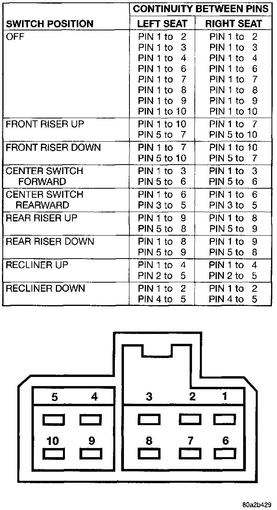

Power Seat Switch
1. Remove the power seat switch as described.Power Seat Switch Continuity:

2. Use an ohmmeter to test the continuity of the switches in each position. See the Power Seat Switch Continuity chart. If OK, see the diagnosis for the Power Seat Adjuster and Motors or Power Recliner Adjuster and Motor, as required. If not OK, replace the faulty switch module.